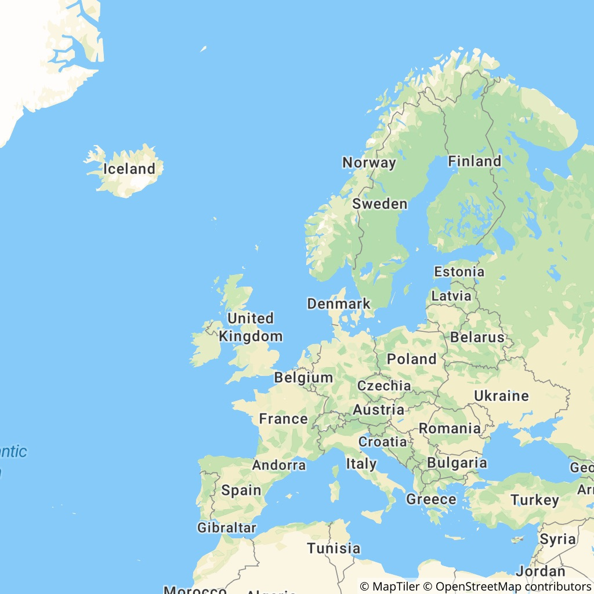

MapTiler SDK - v1.1.0
The Javascript & TypeScript map SDK tailored for MapTiler Cloud


What and why?
The MapTiler SDK JS extends MapLibre GL JS, exposes all its features, and adds new ones on top. The SDK is designed to work with the well-established MapTiler Cloud service, which provides all the data required to fuel a complete web mapping experience: vector tiles, satellite raster tiles, DEM with Terrain RGB, custom styles with an editor, etc.
Why are we creating a new SDK? To make things simpler for developers working in the MapTiler ecosystem! With MapTiler SDK JS, there is no need to load external plugins for the most basic things, copy-paste complex data source URLs, or look up the syntax to enable 3D terrain every time you start a project. All this is built-in, loaded when needed, or exposed with simple functions. Under the hood, this SDK is opinionated as it's being fed by MapTiler Cloud data, but its MapLibre core makes it 100% compatible with other sources.
In addition, the MapTiler SDK JS provides well-documented and easy-to-use wrapper functions to the MapTiler Cloud API services such as: geocoding, static maps, geolocation, as well as a search engine for coordinate reference systems and transforming coordinates from one CRS to another.
📣 Note: If you need only the API Client library to use in a headless fashion and without any map display, check out MapTiler Client JS library for browser and NodeJS.
Install
npm install --save @maptiler/sdk
API documentation
In addition to the details and examples provided in this readme, check out the complete API documentation (see the Markdown version)
Quick start
With ES modules
Recommended for: advanced applications
import * as maptilersdk from '@maptiler/sdk';
// Add your MapTiler Cloud API key to the config
// (Go to https://cloud.maptiler.com/account/keys/ to get one for free!)
maptilersdk.config.apiKey = 'YOUR_API_KEY';
// Let's say you have a DIV ready to receive a map
const mapContainer = document.getElementById('my-container-div');
// Instanciate the map
const map = new maptilersdk.Map({
container: mapContainer,
});
Alternativelly, the apiKey can be set as Map option intead of in the config object. Yet, this will still internally propagate to the config obejct:
import * as maptilersdk from '@maptiler/sdk';
// Let's say you have a DIV ready to receive a map
const mapContainer = document.getElementById('my-container-div');
// Instanciate the map
const map = new maptilersdk.Map({
container: mapContainer,
apiKey: 'YOUR_API_KEY';
});
By default, the map will be initialized with the style streets-v2.
Depending on the framework and environment your are using for your application, you will have to also include the CSS file.
For example, with a NextJS app, this can take place at the top of the file _app.ts/js:
import "@maptiler/sdk/dist/maptiler-sdk.css";
With CDN
The SDK hosted on our CDN is bundled as Universal Module Definition (UMD) to make it standalone and containing all its dependencies. The CDN also serves the style sheet (css).
Recommended for: simple map intergration example and demos
<html>
<head>
<title>MapTiler JS SDK example</title>
<style>
html, body {
margin: 0;
}
#map-container {
position: absolute;
width: 100vw;
height: 100vh;
}
</style>
<!-- Load the SDK CSS -->
<link rel="stylesheet" href="dist/maptiler-sdk.css">
</head>
<body>
<div id="map-container"></div>
<script src ="dist/maptiler-sdk.umd.js"></script>
<script>
// Add your MapTiler Cloud API key to the config
// (Go to https://cloud.maptiler.com/account/keys/ to get one for free!)
maptilersdk.config.apiKey = 'YOUR_API_KEY';
const mapContainer = document.getElementById('my-container-div');
const map = new maptilersdk.Map({
container: mapContainer,
style: maptilersdk.MapStyle.STREETS_DARK,
hash: true,
})
</script>
</body>
</html>
Checkout the minimalist code samples in the demos directory.
Many styles to choose from
MapTiler teams maintains a few styles that we have decided to expose from the SDK. This has two advantages:
- they are easier to remember, no need to type along style URL
- if we make an update to a style, you will benefit from it without modifying your codebase
Here is how it works:
import { Map, MapStyle } from '@maptiler/sdk'
// When instanciating a map
const map = new Map({
container: document.getElementById("my-container-div"),
style: MapStyle.OUTDOOR, // <-- the shorthand for the outdoor style
});
// Or later on, updating the style
map.setStyle(MapStyle.STREETS.DARK);
The styles with a shorthand provided by the SDK are the following:


Know more about built-in map styles
MapTiler provides some reference styles as well as some variants for each. A reference syle sets some guidelines about what kind of information is displayed, the granularity of the information, and more generaly defines a purpose for which this style is the most relevant: street navigation, outdoor adventure, minimalist dashboard, etc. Then, each reference style offers a range of variants that contain the same level of information and has the same purpose but using different colors schemes.
Here is the full list:
MapStyle.STREETS, reference style for navigation and city explorationMapStyle.STREETS.DARK(variant)MapStyle.STREETS.LIGHT(variant)MapStyle.STREETS.PASTEL(variant)
MapStyle.SATELLITEreference style satellite and airborne imagery (no variants)MapStyle.HYBRIDreference style satellite and airborne imagery with labels (no variants)MapStyle.OUTDOORreference style for adventureMapStyle.WINTERreference style for winter adventureMapStyle.DATAVIZ, the perfect style for data visualization, with very little noiseMapStyle.DATAVIZ.DARK(variant)MapStyle.DATAVIZ.LIGHT(variant)
MapStyle.BASICreference style for minimalist design and general purposeMapStyle.BASIC.DARK(variant)MapStyle.BASIC.LIGHT(variant)
MapStyle.BRIGHTreference style for high contrast navigationMapStyle.BRIGHT.DARK(variant)MapStyle.BRIGHT.LIGHT(variant)MapStyle.BRIGHT.PASTEL(variant)
MapStyle.TOPOreference style for topographic studyMapStyle.TOPO.SHINY(variant)MapStyle.TOPO.PASTEL(variant)MapStyle.TOPO.TOPOGRAPHIQUE(variant)
MapStyle.VOYAGERreference style for stylish yet minimalist mapsMapStyle.VOYAGER.DARK(variant)MapStyle.VOYAGER.LIGHT(variant)MapStyle.VOYAGER.VINTAGE(variant)
MapStyle.TONERreference style for very high contrast stylish mapsMapStyle.TONER.BACKGROUND(variant)MapStyle.TONER.LITE(variant)MapStyle.TONER.LINES(variant)
MapStyle.OPENSTREETMAP(reference style, this one does not have any variants)
All reference styles (instances of ReferenceMapStyle) and style variants (instances of MapStyleVariant) have methods to know the alternative styles and variant that belong to the same reference style (.getVariants()). This is handy to provide a default/dark/light alternative color scheme, yet preserving the same level of details as in the reference style. Read more about about ReferenceMapStyle and MapStyleVariant.
Still, you can still use some classic styles with just a string if you know their MapTiler CLoud ID:
map.setStyle('outdoor-v2');
And finally, you can use your own custom styles designed with our style editor. Every custom style is given a unique ID, for instance: c912ffc8-2360-487a-973b-59d037fb15b8.
This ID can be provided as such:
map.setStyle("c912ffc8-2360-487a-973b-59d037fb15b8");
Or in its extended form:
map.setStyle("https://api.maptiler.com/maps/c912ffc8-2360-487a-973b-59d037fb15b8/style.json");
// this could be suffixed with the API token as well
And can even be provided in the URI form:
map.setStyle("maptiler://c912ffc8-2360-487a-973b-59d037fb15b8");
Centering the map on visitors
It is sometimes handy to center map on the visitor's location, and there are multiple ways of doing it but for the SDK, we have decided to make this extra simple by using the IP geolocation API provided by MapTiler Cloud, directly exposed as a single option of the Map constructor. There are two strategies:
POINT: centering the map on the actual visitor location, optionnaly using thezoomoption (zoom level13if none is provided). As a more precise option, if the user has previously granted access to the browser location (more precise) then this is going to be used.COUNTRY: fitting the map view on the bounding box of the visitor's country. In this case, thezoomoption, if provided, will be ignored
Here is how the map gets centered on the visitor's location:
new maptilersdk.Map({
// ... other options
geolocate: maptilersdk.GeolocationType.POINT
})
Here is how the map fits the visitor's country bounds:
new maptilersdk.Map({
// ... other options
geolocate: maptilersdk.GeolocationType.COUNTRY
})
The geolocation options will not be taken into consideration in the following cases:
- if the
centeroptions is provided, then it prevails - if the
hashoptions is provided with the valuetrueAND a location hash is already part of the URL. Ifhashistruebut there is not yet a location hash in the URL, then the geolocation will work.
📣 Note: if none of the options
centerorhashis provided to theMapconstructor, then the map will be centered using thePOINTstrategy, unless thegeolocatehas the valuefalse.
📣 Note 2: the term IP geolocation refers to finding the physical location of a computer using its IP address. The IP address is a numerical identifier of a computer within a network, just like the phone number for a telephone. The IP geolocation is not using the GPS of a device and usually provides a precision in the order of a few hundred meters. This precision may vary based on many local parameters such as the density of the network grid or the terrain, this is why it is generaly better not to use a zoom level higher than
14.
Easy to add controls
The term "control" is commonly used for all sorts of buttons and information display that take place in one of the corner of the map area. The most well know are probably the [+] and [-] zoom buttons as well as the attribution information. Plenty of others are possible and we have made a few easy to add and directly accessible from the Map constructor options:
navigationControl- Shows the
[+],[-]and tilt/bearing/compass buttons - a boolean or a corner position. Showing on the top-right by default. Hidden if
false.
- Shows the
geolocateControl- Shows a arrow-shaped locate button. When clicked, it adds a marker and center the map. If clicked again, the marker disapears (unless the map was moved since first clicked)
- a boolean or a corner position. Showing on the top-right by default. Hidden if
false.
terrainControl- Shows a button to enable/disable the 3D terrain (does not tilt the map)
- a boolean or a corner position. Hidden by default, showing on top-right if
true.
scaleControl- Shows a distance scale. The unit (
"metric","imperial"or"nautical") can be set in the config objectconfig.unit(default:"metric") - a boolean or a corner position. Hidden by default, showing on bottom-right if
true.
- Shows a distance scale. The unit (
fullscreenControl- Shows a button that toggles the map into fullscreen
- a boolean or a corner position. Hidden by default, showing on top-right if
true.
The corner positions possible are:
"top-left""top-right""bottom-left""bottom-right"
Example:
import { Map } from "@maptiler/sdk";
const map = new Map({
container: document.getElementById("my-container-div"),
terrainControl: false,
scaleControl: true,
fullscreenControl: "top-left",
})
3D terrain in one call


You want to enable 3D terrain? That's easy now with a single function call:
// With the default exaggeration factor of 1
map.enableTerrain();
// Or, if you want to boost some volume a little
map.enableTerrain(1.5);
The terrain can also be enabled directly from the Map constructor, with the options terrain (a boolean, false by default) and terrainExaggeration (a number, 1 by default):
const map = new Map({
// some options...
terrain: true,
terrainExaggeration: 1.5,
})
At any point, you can modify the exaggeration factor:
map.setTerrainExaggeration(2);
Or simply disable it:
map.disableTerrain()
📣 Note: Keep in mind that setting an exaggeration factor at
0will result in a the same result as disabling the elevation but that terrain RGB tiles will still be fetched in the background.
📣 Note 2: please be aware that due to the volume and elevation of the map floor in 3D space, the navigation with the terrain enabled is slightly different than without.
Easy language switching
The language generally depends on the style but we made it possible to easily set and update from a built-in list of languages.
The builtin list of supported languages is accessible from the Language object:
import { Language } from "@maptiler/sdk";
In the UMD bundle, it will be directly at maptilersdk.Language.
There three distinct ways to set the language of a map:
- Global way, using the config object:
import { config } from "@maptiler/sdk";
config.primaryLanguage = Language.ENGLISH;
Then, the if any further language is setting is applied, all the map instances created afterward will use this language.
- Set the language at instanciation time:
const map = new Map({
// some options...
language: Language.ENGLISH, // the ISO codes can also be used (eg. "en")
})
It will only apply ENGLISH as the language of this specific map instance (and will not alter the global config).
- Set the language after the map has been instanciated:
map.setLanguage(Language.ENGLISH);
Again, it will only apply ENGLISH as the language of this specific map instance (and will not alter the global config).
The list of supported languages is built-in and can be found here. In addition, there are spacial language flags:
Language.AUTO[DEFAULT] uses the language defined in the web browserLanguage.STYLE_LOCKto strictly use the language defined in the style. Prevents any further language updateLanguage.LOCALuses the language local to each countryLanguage.LATINuses a default with latin charactersLanguage.NON_LATINuses a default with non-latin characters
Whenever a label is not supported in the defined language, it falls back to Language.LOCAL.
Here is a sample of some compatible languages:

Built-in support for right-to-left languages
Languages that are written right-to-left such as arabic and hebrew are fully supported by default. No need to install any plugin!

Custom Events and Map Lifecycle
Events
Since the SDK is fully compatible with MapLibre, all these events are available, yet we have added one more: loadWithTerrain.
The loadWithTerrain event is triggered only once in a Map instance lifecycle, when both the load event and the terrain event with non-null terrain are fired.
Why a new event?
When a map is instanciated with the option terrain: true, then MapTiler terrain is directly added to it and some animation functions such as .flyTo() or .easeTo() if started straight after the map initialization will actually need to wait a few milliseconds that the terrain is properly initialized before running.
Relying on the load event to run an animation with a map with terrain may fail in some cases for this reason, and this is why waiting for loadWithTerrain is safer in this particular situation.
Lifecycle Methods
The events load and loadWithTerrain are both called at most once and require a callback function to add more elements such as markers, layers, popups and data sources. Even though MapTiler SDK fully supports this logic, we have also included a promise logic to provide a more linear and less nested way to wait for a Map instance to be ready. Let's compare the two ways:
- Classic: with a callback on the
loadevent:
function init() {
const map = new Map({
container,
center: [2.34804, 48.85439], // Paris, France
zoom: 14,
});
// We wait for the event.
// Once triggered, the callback is ranin it's own scope.
map.on("load", (evt) => {
// Adding a data source
map.addSource('my-gps-track-source', {
type: "geojson",
data: "https://example.com/some-gps-track.geojson",
});
})
}
- Modern: with a promise returned by the method
.onLoadAsync(), used in anasyncfunction:
async function init() {
const map = new Map({
container,
center: [2.34804, 48.85439], // Paris, France
zoom: 14,
});
// We wait for the promise to resolve.
// Once triggered, the rest of the init function runs
await map.onLoadAsync();
// Adding a data source
map.addSource('my-gps-track-source', {
type: "geojson",
data: "https://example.com/some-gps-track.geojson",
});
}
We deployed exactely the same logic for the loadWithTerrain event. Let's see how they two ways compares.
- Classic: with a callback on the
loadWithTerrainevent:
function init() {
const map = new Map({
container,
center: [2.34804, 48.85439], // Paris, France
zoom: 14,
terrain: true,
});
// We wait for the event.
// Once triggered, the callback is ran in its own scope.
map.on("loadWithTerrain", (evt) => {
// make an animation
map.flyTo({
center: [-0.09956, 51.50509], // London, UK
zoom: 12.5,
})
})
}
- Modern: with a promise returned by the method
.onLoadWithTerrainAsync(), used in anasyncfunction:
async function init() {
const map = new Map({
container,
center: [2.34804, 48.85439], // Paris, France
zoom: 14,
terrain: true,
});
// We wait for the promise to resolve.
// Once triggered, the rest of the init function runs
await map.onLoadWithTerrainAsync();
// make an animation
map.flyTo({
center: [-0.09956, 51.50509], // London, UK
zoom: 12.5,
})
}
We believe that the promise approach is better because it does not nest scopes and will allow for a linear non-nested stream of execution. It also corresponds to more modern development standards.
📣 Note: Generally speaking, promises are not a go to replacement for all event+callback and are suitable only for events that are called only once in the lifecycle of a Map instance. This is the reason why we have decided to provide a promise equivalent only for the
loadandloadWithTerrainevents.
Easy access to MapTiler Cloud API
Our map SDK is not only about maps! We also provide plenty of wrapper to our API calls!
📣 Note: If you need only the API Client library to use in a headless fashion and without any map display, check out out API Client library for browser and NodeJS. It's exactely what is down below and only that, in a minimalistic TypeScript package 🐙.
🔠Geocoding
✅ Please, use geocoding functions only from client-side (browser) and do not 🚫 store or redistribute MapTiler Cloud API data. In case of doubt, consult the terms ⚖️
Forward
You want to know the longitude and latitude of a specific place, use the forward geocoding:
// in an async function, or as a 'thenable':
const result = await maptilersdk.geocoding.forward('paris');
You can provide some options such as:
- the proximity, given a lon-lat position, to sort the results
- one of more languages to get the results into
- a bounding geo box, to restrict the search to a given window
Read more about forward geocoding on our official documentation.
Reverse
You wan to tknow the name of a place, given a longitude-latitude? Use the reverse geocoding:
// in an async function, or as a 'thenable':
const result = await maptilersdk.geocoding.reverse([6.249638, 46.402056]);
The same option object as the forward geocoding can be provided.
Read more about reverse geocoding on our official documentation.
Language
For both forward and reverse geocoding, this library provides a list of supported languages as shorthands to ISO language codes. The result will be provided in multiple languages if the language options is an array:
const result = await maptilersdk.geocoding.forward('paris', {language: [maptilersdk.geocoding.languages.SPANISH, maptilersdk.geocoding.languages.KOREAN]})
The special language AUTO will detect the platform/browser preferred language.
🕵️‍♂️ Geolocation
The geolocation service provides location informations of a visitor using its IP address.
The geolocation uses the IP address of a visitors to provide informations about their location, such as city, region, country, timezone, etc. The precision is lower than GPS but does not require visitors to explicitely enable the location service from their web browser.
There is only a single function:
// in an async function, or as a 'thenable':
const result = await maptilersdk.geolocation.info();
Read more about geolocation on our official documentation.
🌠Coordinates
If you are already familiar with epsg.io (created by MapTiler), then you may find convenient to access the details of more than 10 thousands of coordinate reference systems (CRS) programmatically, as well as transforming coordinates from one system to another!
Search
The search lets you perform a query in a free form fashion. Here are some examples:
// in an async function, or as a 'thenable':
const resultA = await maptilersdk.coordinates.search('mercator');
const resultB = await maptilersdk.coordinates.search('plate carree');
const resultC = await maptilersdk.coordinates.search('france');
const resultD = await maptilersdk.coordinates.search('code:4326', {transformations: true}));
The transformations options retrieves a lot more details about the CRS that MapTiler API is able to transform to/from than just their IDs.
Read more about searching coordinate systems on our official documentation.
Transform
Transforming a couple of coordinates from one system to another can be challenging, for example, most countries have their own official system, yet web mapping tools are more often than not exclusive to WGS84.
If not provided, both the source (sourceCrs) and the destination (targetCrs) are default to EPSG:4326 (in other words, WGS84). Here is how to use this feature:
// in an async function, or as a 'thenable':
// Providing one coordinate to transform, with a target CRS being EPSG:9793 (RGF93 v2 / Lambert-93, France official CRS)
const resultA = await maptilersdk.coordinates.transform([1, 45], {targetCrs: 9793})
// Using the same logic, we can pass up to 50 coordinates to be transformed
const resultB = await maptilersdk.coordinates.transform([[10, 48], [1, 45]], {targetCrs: 9793})
Read more about transforming coordinates on our official documentation.
💽 Data
MapTiler Cloud give its users the possibility to upload and create data, manually with a user interface or by uploading a GPX, GeoJSON, KML or shp file. A unique ID is associated to each dataset so that we can later on access it programmatically to retrieve a GeoJSON equivalent of it:
// in an async function, or as a 'thenable':
const result = await maptilersdk.data.get('my-dataset-unique-id')
Since the result is a GeoJSON, it can easily be added to a map with .addSource() and .addLayer().
Read more about fetching your own data on our official documentation.
🗺️ Static maps
✅ Please, use static maps URLs only from client side
<img>elements, and do not 🚫 store or redistribute the static map files. In case of doubt, consult the terms ⚖️
Maptiler Cloud provides many possibilities for creating static maps as PNG, JPEG or WebP images. They all offer the possibilities to:
- Choose from one of the MapTiler style or your own
- Add markers with a custom icon (or default icon with custom color)
- Add path or polygon, with a parametric line width and color and a parametric filling color
Three modes are available: centered, bounded and automatic.
📣 important: only image URLs are returned.
Contrary to the other functions of this library, the static map functions do not perform any query to MapTiler Cloud API, instead they build the image URL for you to use in<img>elements.
Map Styles
In the following static map functions, the option object features a style property that can be a string or one of the built-in style shorthand. Here is the full list:
MapStyle.STREETS, reference style for navigation and city explorationMapStyle.STREETS.DARK(variant)MapStyle.STREETS.LIGHT(variant)MapStyle.STREETS.NIGHT(variant)MapStyle.STREETS.PASTEL(variant)
MapStyle.OUTDOORreference style for adventureMapStyle.OUTDOOR.DARK(variant)
MapStyle.WINTERreference style for winter adventureMapStyle.WINTER.DARK(variant)
MapStyle.SATELLITEreference style satellite and airborne imagery (no variants)MapStyle.HYBRIDreference style satellite and airborne imagery with labels (no variants)MapStyle.BASICreference style for minimalist design and general purposeMapStyle.BASIC.DARK(variant)MapStyle.BASIC.LIGHT(variant)
MapStyle.BRIGHTreference style for high contrast navigationMapStyle.BRIGHT.DARK(variant)MapStyle.BRIGHT.LIGHT(variant)MapStyle.BRIGHT.PASTEL(variant)
MapStyle.TOPOreference style for topographic studyMapStyle.TOPO.SHINY(variant)MapStyle.TOPO.PASTEL(variant)MapStyle.TOPO.TOPOGRAPHIQUE(variant)
MapStyle.VOYAGERreference style for stylish yet minimalist mapsMapStyle.VOYAGER.DARK(variant)MapStyle.VOYAGER.LIGHT(variant)MapStyle.VOYAGER.VINTAGE(variant)
MapStyle.TONERreference style for very high contrast stylish mapsMapStyle.TONER.BACKGROUND(variant)MapStyle.TONER.LITE(variant)MapStyle.TONER.LINES(variant)
MapStyle.OPENSTREETMAP(reference style, this one does not have any variants)MapStyle.STAGE, the perfect style for data visualization, with very little noiseMapStyle.STAGE.DARK(variant)MapStyle.STAGE.LIGHT(variant)
Centered static maps
This type of map is centered on a longitude-latitude coordinate and the zoom level must also be provided (from 0: very zoomed out, to 22: very zoomed in).
Note that if a path or markers are provided, the framing of the map will not automatically adapt to include those (use the automatic mode for that).
const imageLink = maptilersdk.staticMaps.centered(
// center position (Boston)
[-71.06080, 42.362114],
// zoom level
12.5,
// Options
{
// Request a hiDPI/Retina image
hiDPI: true,
// Output image size
width: 1000,
height: 1000,
// Map style
style: maptilersdk.MapStyle.OUTDOOR,
});
Read more about centered static maps on our official API documentation.
Bounded static maps
This type of map requires a bounding box made of two points: the south-west bound and the north-east bound. The zoom level cannot be provided and is automatically deduced from the size of the bounding box.
const imageLink = maptilersdk.staticMaps.bounded(
// The bounding box on Europe
[
-24, // west bound (min x)
34.5, // south bound (min y)
32, // east bound (max x)
71, // north bound (max y)
],
// Options
{
hiDPI: true,
width: 2048,
height: 2048,
style: maptilersdk.MapStyle.STREETS.DARK,
// Extra space that will add around the bounding box, in percentage
// (0.1 = 10% is actually the dafault)
padding: 0.1
});
Since the zoom level cannot be provided, the level of details is dictated by the size of the output image. here is an example:
2048 x 2048 |
1024 x 1024 |
|---|---|
 |
 |
As you may notice, the geo bounding box could have very different proportions than the output image size. In the following example, we place the very same bounding box around Portugal, which has a this particular strip looking shape. We also add a path that repeats exactly the same bounding box to show the difference between the provided bounding box and the final image. We kept the default padding of 10%:
2048 x 2048 |
1024 x 2048 |
|---|---|
 |
Read more about bounded static maps on our official API documentation.
Automatic static maps
As we have seen with centered and bounded maps, providing all the parameters is nice but can be cumbersome for the simplest use cases. This is why MapTiler Cloud also provides static maps that fits automatically whatever you need to place inside: path or markers.
In the following example, we are going to load a cycling track recorded by one of our team members in Montreal, Canada. The track, originally a GPX file, was pushed to MapTiler Data and is now made available as a GeoJSON:
// Fetching the GeoJSON
const bikeTrack = await maptilersdk.data.get('the-id-of-a-bike-track-in-montreal');
// Extracting the track points with the shape [[lng, lat], [lng, lat], ...]
const trackPoints = bikeTrack.features[0].geometry.coordinates[0]
.map(p => p.slice(0, 2));
const imageLink = maptilersdk.staticMaps.automatic({
// hiDPI/Retina precision
hiDPI: true,
// A fairly large output image
width: 2048,
height: 1024 ,
// A grey style on which the track will pop!
style: maptilersdk.MapStyle.STREETS.LIGHT,
// Draw a path with the trackpoints
path: trackPoints,
// Adding a marker for the starting point, with a custom color (array of shape [lng, lat, color])
markers: [trackPoints[0][0], trackPoints[0][1], '#0a0'],
// Showing the track in red
pathStrokeColor: 'red',
});
And voila!

📣 Note: The GeoJSON for this track contains 9380 couples of coordinates, which is a lot! In order to send the track to MapTiler Cloud static maps API, the client simplifies the long paths while keeping a high degree of precision using a very fast Ramer-Douglas-Peucker algorithm.
Read more about bounded static maps on our official API documentation.